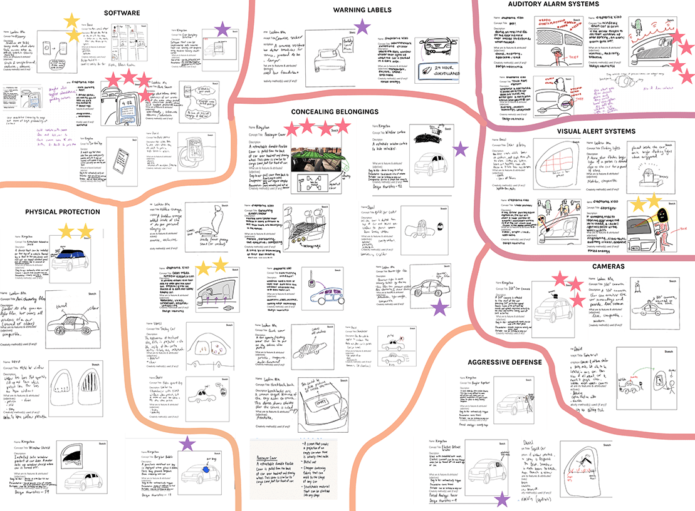
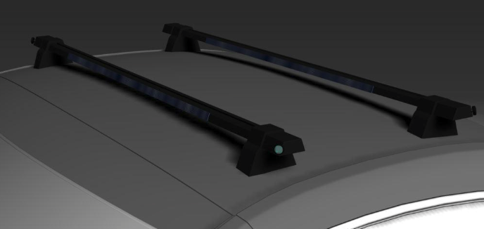
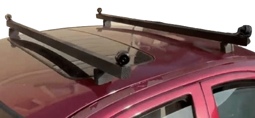

AutoWatch
360° vehicle surveillance system with alarms to prevent vehicle break-ins.
Product Opportunity Gap
How might we make cars less targetable for break-ins?
Proposed Solution
A 360° vehicle surveillance system that alerts user via app when suspicious activity is detected. User is able to view live feed and play audio/speak through built-in speakers.
Design Process
Upon noticing an increase in vehicle break-ins in the bay area, our team determined that there is an opportunity gap between current available products and customer's needs.
Following human-centered design methods, we went through concept generation, prototyping, and validation processes to deliver an idea that could make cars less targetable for break-ins.


